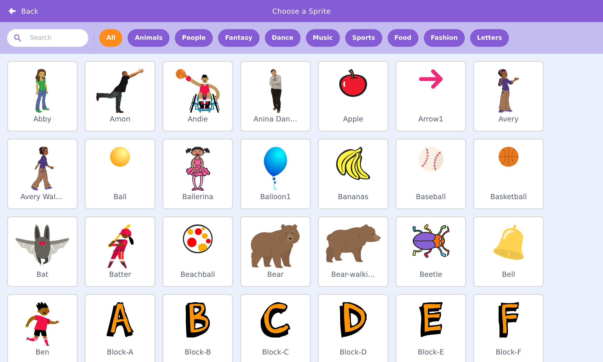
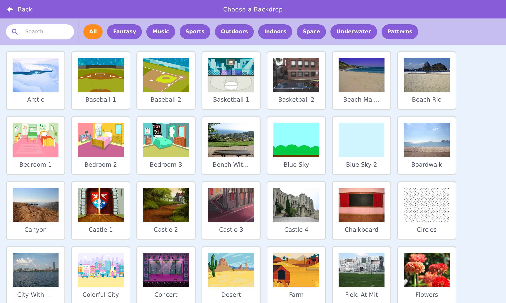

🎭 Lesson 3.1: An Interactive Animated Story
Time to build something your child will want to show off: a little animated scene with two characters who talk to each other, on a real backdrop. You'll meet the magic block that lets sprites work as a team — the broadcast.
🎯 Learning Objectives
- Add multiple sprites and a backdrop from the libraries
- Position sprites with go to and glide
- Coordinate sprites with broadcast and when I receive
- Stage a two-character conversation that plays itself
Estimated Time: 45 minutes • Builds on: Module 2
In This Lesson
🛠️ Try It: Set the scene
Every story needs a place and a cast. Start a new project, then:
- Add a backdrop. Click the Choose a Backdrop button (bottom-right, below the stage panel) and pick a setting — say, "Forest."
- Add a second sprite. Click the Choose a Sprite cat button and pick a character to join the cat.


💡 Remember from Lesson 1.2
Each sprite has its own code. Click a sprite in the sprite list before you add blocks, so the blocks land on the right character.
🎓 Learn It: Positioning & glide
The stage is a grid: x is left–right (−240 to 240), y is down–up (−180 to 180), and the center is x: 0, y: 0. Two Motion blocks place your cast:
- go to x: __ y: __ — teleports instantly (use it to set a starting spot).
- glide 1 secs to x: __ y: __ — slides smoothly over time (lovely for entrances).
Give the cat this script: it starts off-stage-left and glides to center as the story opens. Cinematic!
🎓 Learn It: Broadcasts — the team signal
Here's the problem: how does Sprite B know when Sprite A finished talking, so it can reply? Sprites can't see each other's scripts. The answer is a broadcast — a silent, invisible signal any sprite can shout, and any sprite can listen for.
It's like a stage director calling "Cue: cat's done!" Every actor listening for that cue springs into action.
Cat: send the cue
Bear: listen for the cue
Both blocks live in the gold Events category. The first time, you'll pick "New message" and name your cue (like your turn). Naming cues clearly is a great habit.
🛠️ Try It: A conversation that plays itself
Chain broadcasts to script a whole back-and-forth. Each sprite talks, then cues the next line:
- Cat (on green flag): say "Hi Bear!", then broadcast line 2.
- Bear (when I receive line 2): say "Hello Cat!", then broadcast line 3.
- Cat (when I receive line 3): say "Want to explore?", then broadcast line 4.
- Bear (when I receive line 4): say "Let's go!" and glide off together.
✅ Why broadcasts beat guessing wait times
You could try to line up two sprites with matching "wait" blocks — but the timing drifts and breaks. Broadcasts guarantee the next line only starts when the last one truly finishes. Cleaner, and it always works.
💡 Challenge: change the backdrop mid-story
The Stage can receive broadcasts too. Give the Stage a script: when I receive "night" → switch backdrop to a night scene. Then have a sprite broadcast "night" at the story's turning point. Instant scene change!
💬 Teach It: Story before code
The secret to a great story project: plan the story with paper and voices first, code second. Coding a story your child hasn't imagined yet is backwards.
The 3-step story warm-up
- Who? Let them pick two characters and give them names and personalities.
- Where? Pick the setting (backdrop) together.
- What happens? Act out the conversation out loud, taking turns voicing each character. That is the script you'll code.
"Let's be the characters first! You be the bear, I'll be the cat. What does the cat say? …Great — now let's make Scratch say exactly that."
👧 Ages 5–7
Two lines each is plenty. You wire the broadcasts; they choose the words and characters. The magic is hearing their words come out of the sprite.
🧒 Ages 8–11
They can manage the broadcast chain with light help. Encourage a beginning, a problem, and an ending.
🧑 Ages 12+
Push for a scene change (backdrop broadcast), sound effects, and a third character. Suddenly it's a real production.
⚠️ Common kid bug
Both sprites start talking at once (they both used when 🟩 clicked). Fix: only the first line starts on the flag; every other line starts with when I receive.
🎯 Quick Check
Question 1: Two sprites need to take turns talking. What coordinates them?
Question 2: Which block moves a sprite smoothly over time?
Question 3: Both characters talk at the exact same time. Likely cause?
Summary & What's Next
🎉 Key Takeaways
- Add sprites and backdrops from the libraries; each sprite has its own code.
- go to teleports; glide slides smoothly.
- broadcast + when I receive let sprites cue each other reliably.
- Plan the story out loud before coding it.
🚀 Next up
Stories are wonderful, but kids often dream of games. In Lesson 3.2 we build one — with a variable to keep score. Get ready to catch some falling apples.